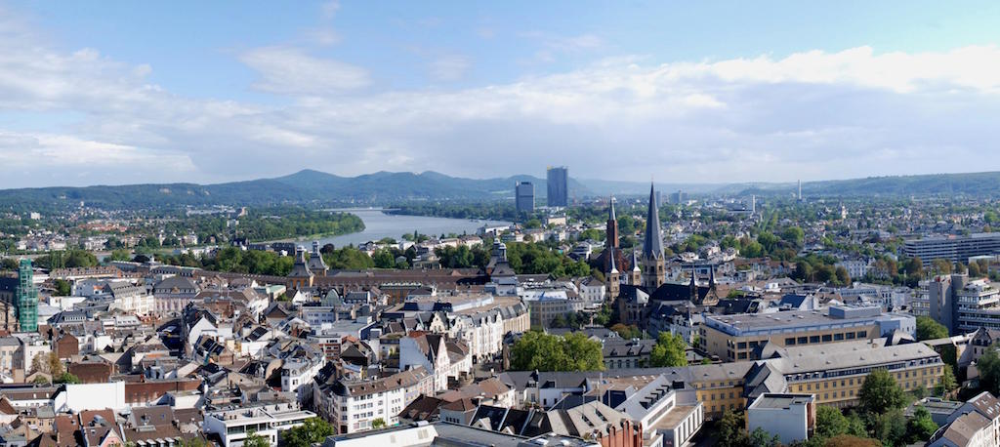

Bonn
Die Stadt
Nach dem Zweiten Weltkrieg war Bonn bis Anfang der Neunziger Bundeshauptstadt und damit das politische Zentrum West-Deutschlands. Die Vielzahl der diplomatischen Vertretungen haben das Leben und das Flair der Stadt in der jüngeren Vergangenheit geprägt. Im Vergleich zu den anderen Großstädten wirkt Bonn provinziell, was aber durchaus seinen Charme hat: Die Stadt ist überschaubar und gemütlich geblieben. Der Wegzug von Teilen der Bundesregierung und den meisten Diplomaten war zwar einschneidend für die gesamte Region, aber durch die Neuansiedlung vieler Firmen (Deutsche Telekom, Deutsche Post, Postbank) und sonstigen Bundesbehörden und zahlreichen internationalen Organisationen (Vereinte Nationen, GIZ) hat die Stadt nach wie vor hohe, insbesondere auch wirtschaftliche Attraktivität.
Was man unternehmen kann
Wir wissen, dass die meisten von euch nicht viel Zeit haben werden, dennoch möchten wir euch ein paar Tipps für einen Stadtrundgang geben.
Die Touristeninformation befindet sich in der Windeckstraße 1 (in der Nähe vom Bahnhof, neben Karstadt), wo man diesen Plan bekommen kann.
Spaziergänge in Bonn:
- Zunächst beginnt man im Zentrum durch die Friedrichstraße in Richtung Markt zu schlendern.
- Über den Hofgarten (hinter der Universität) schreitet man durch die Poppelsdorfer Allee zum Poppelsdorfer Schloss - dahinter befindet sich übrigens ein kleiner botanischer Garten.
- Über die alten Villen in der Südstadt gelangt man ans Rheinufer.
- Von dort geht es wieder zurück ins Zentrum. In den kleinen Gassen kann man sich wunderbar verlieren und am Ende kommt man doch wieder am Münsterplatz, Markt oder Friedensplatz raus. Am Neutor (nähe Münsterplatz) gibt es übrigens einen Haribo-Laden. Für alle, die es noch nicht wussten, Haribo oder HAns-RIegel-BOnn kommt aus Bonn! Außerhalb von Bonn Richtung Bad Godesberg gibt es auch einen Fabrikverkauf (vielleicht für diejenigen interessant, die mit dem Auto kommen).
- Zum Schluss empfiehlt sich noch ein Abstecher in die Altstadt. In den Kneipen und Cafés kann man sich sehr gut mit einem Kaffee oder Kölsch erfrischen.
Diese Rundgänge haben wir für eure Orientierung bei Google Maps markiert.